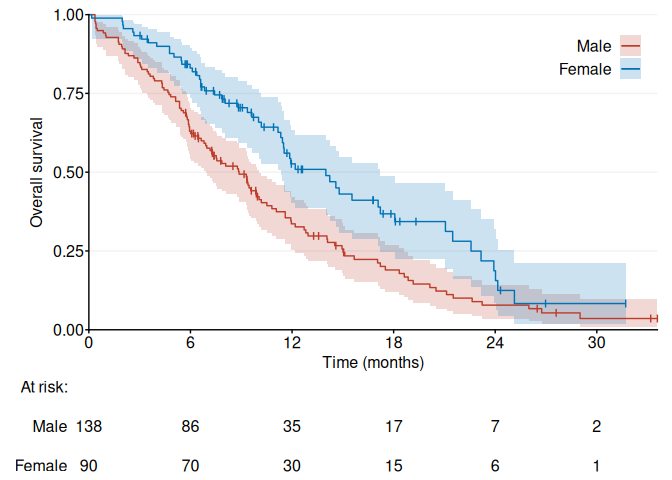
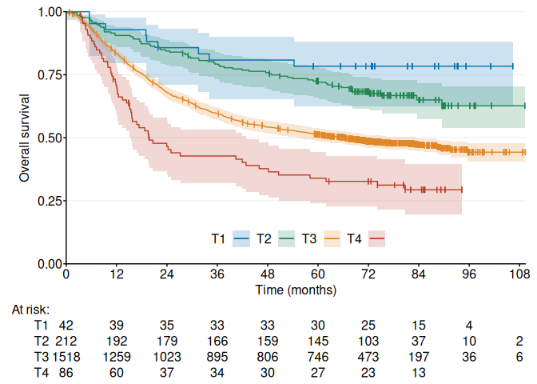

Kaplan–Meier plots using the ggplot2 package, with an overall Stata-like style. Differences compared to survminer::ggsurvplot() include:
Transparent confidence interval areas are always drawn behind survival curves and never over them.
Censor marks are drawn as customizable line segments instead of point symbols.
The risk table title is spaced uniformly with the risk table rows.
The Kaplan–Meier y-axis title remains fixed in place, unaffected by the width of risk table labels.
Installation
You can install the development version of ggKaplanMeier from GitHub with:
remotes::install_github("hongconsulting/ggKaplanMeier")Example 1
library(ggKaplanMeier)
data <- survival::lung
g <- ggKM(data$time * 12 / 365.2425, data$status - 1, data$sex, breaks.t = seq(0, 30, 6), legend.labels = c("Male", "Female"), title.s = "Overall survival", title.t = "Time (months)")
print(g)
Example 2
library(ggKaplanMeier)
data <- survival::colon
g <- ggKM(data$time * 12 / 365.2425, data$status, data$extent, colors = ggsci::pal_nejm()(4)[c(2, 4, 3, 1)], legend.direction = "horizontal", legend.labels = c("T1", "T2", "T3", "T4"), legend.position = c(0.5, 0.1), title.s = "Overall survival", title.t = "Time (months)")
print(g)
Further Reading
- Fay, M.P. and Brittain, E.H., 2016. Finite sample pointwise confidence intervals for a survival distribution with right‐censored data. Statistics in Medicine, 35(16), pp. 2726–2740.
- Greenwood, M., 1926. A report on the natural duration of cancer. In: Reports on Public Health and Medical Subjects, 33, pp. 1–26. London: Her Majesty’s Stationery Office, Ministry of Health.
- Nair, V.N., 1984. Confidence bands for survival functions with censored data: a comparative study. Technometrics, 26, pp. 265–275.
- Rothman, K.J., 1978. Estimation of confidence limits for the cumulative probability of survival in life table analysis. Journal of Chronic Diseases, 31(8), pp. 557–560.
- Thomas, D.R. and Grunkemeier, G.L., 1975. Confidence interval estimation of survival probabilities for censored data. Journal of the American Statistical Association, 70(352), pp. 865–871.